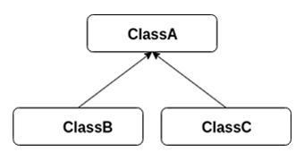

Object-Oriented Programming
Object-oriented programming, or OOP, refers to a style of computer programming in which the programmer defines the data type of a data structure, as well as the functions that can be applied to the data structure. In this way, the data structure becomes an object that has both data and functions. Object-oriented programming aims to implement real-world entities through the use of objects.
Objects & Classes
Any entity that has state and behaviour is an object. A typical Java program creates many objects, which interact by invoking methods.
An object consists of:
- State: The attributes of the object.
- Behaviour: The methods of the object.
- Identity: A unique name assigned to the object that allows it to interact with other objects.
Objects in Java have their attributes stored in instance variables, and have methods that can manipulate the behaviours and attributes of the object.
However, it is necessary that these objects are set up somehow. This is where classes come in. A class can be considered as a blueprint from which objects are created. A class represents the set of states and behaviours that are common to all objects of a specific type. Therefore, all objects that are built from the same class have the same components.
Here is an example of a class:
public class Dog {
public String name;
public int age;
//default constructor
public Dog() {
name = "";
age = 1;
}
public Dog(String name, int age) {
this.name = name;
this.age = age;
}
public void bark() {
System.out.println("Woof");
}
public void sleep() {
//implementation not shown
}
public void eat() {
//implementation not shown
}
}
public class Main {
public static void main(String[] args) {
Dog dog = new Dog();
dog.name = "Scooby";
dog.age++;
System.out.println(dog.name + " is " + dog.age + " years old.");
}
}
Access Modifiers
Access modifiers in Java help restrict the scope of a class, constructor, field or method.
There are 4 types of access modifiers:
- Default (No keyword)
- Private
- Protected
- Public
| Visibility | Default | Private | Protected | Public |
|---|---|---|---|---|
| Same Class | Yes | Yes | Yes | Yes |
| Same Package Subclass | Yes | No | Yes | Yes |
| Same Package Non-Subclass | Yes | No | Yes | Yes |
| Different Package Subclass | No | No | Yes | Yes |
| Different Package Non-Subclass | No | No | No | Yes |
Encapsulation
Encapsulation is an object-oriented programming technique that wraps data under a single unit.
Essentially, it shields data in a class from being accessed by code outside of itself.
Because of this, encapsulation is also known as data-hiding.
The variables of the class are hidden from other classes, and so the user cannot directly access the object's data.
Data can only be accessed and modified using methods from its own class, such as accessor and mutator methods.
To hide variables from other classes, the keyword private is used.
It is possible to rewrite the Dog class from above using encapsulation:
public class Dog {
private String name;
private int age;
//default constructor
public Dog() {
name = "";
age = 1;
}
public Dog(String name, int age) {
this.name = name;
this.age = age;
}
public void bark() {
System.out.println("Woof");
}
public void sleep() {
//implementation not shown
}
public void eat() {
//implementation not shown
}
public String getName() {
return name;
}
public void setName(String name) {
this.name = name;
}
public int getAge() {
return age;
}
public void growOlder() {
age++;
}
}
This class is encapsulated because the variables are private and the accessor/mutator methods are public.
Any class that wants to access the data of the Dog class will have to use these methods.
public class Main {
public static void main(String[] args) {
Dog dog = new Dog();
dog.setName("Scooby");
dog.growOlder();
System.out.println(dog.getName() + " is " + dog.getAge() + " years old.");
}
}
Inheritance
Superclasses and Subclasses
Inheritance is an important mechanism in Java that allows a class to inherit the fields and methods of another class. A superclass is the class whose features will be inherited by the subclass. Think of the subclass as a child of the superclass. It inherits features from its parent class, but it can add its own fields and methods in addition to the inherited fields and methods.
The keyword used for inheritance is extends.
//superclass
public class Shape {
//implementation not shown
}
//subclass
public class Circle extends Shape {
//implementation not shown
}
A subclass will inherit all public and protected members of its superclass, but not any private members.
However, if the superclass has any mutator or accessor methods, the subclass can use these to access and modify private fields of the superclass.
To call the superclass constructor from the subclass, the keyword super is used to replace what would normally be the superclass name.
It is possible to rewrite the Dog class from above using inheritance:
public class Animal {
private String name;
private int age;
//default constructor
public Animal() {
name = "";
age = 1;
}
public Animal(String name, int age) {
this.name = name;
this.age = age;
}
public void sleep() {
//implementation not shown
}
public void eat() {
//implementation not shown
}
public String getName() {
return name;
}
public void setName(String name) {
this.name = name;
}
public int getAge() {
return age;
}
public void growOlder() {
age++;
}
}
public class Dog extends Animal {
//default constructor
public Dog() {
super();
}
public Dog(String name, int age) {
super(name, age);
}
public void bark() {
System.out.println("Woof");
}
}
Inheritance Types
There are several types of inheritance that Java supports, the main three being single inheritance, multilevel inheritance, and hierarchical inheritance. These relationships are shown below using arrows that point from the subclass to the superclass. The arrows represent an is-a relationship between the classes.
Single Inheritance
Source: javatpoint
In single inheritance, the subclass inherits the features of the superclass. It is the most basic of inheritance types.
Multilevel Inheritance
Source: javatpoint
In multilevel inheritance, the subclass also serves as a superclass to another class. In the image, ClassA serves as a superclass to ClassB, which in turn is the superclass of ClassC. ClassC ends up implicitly inheriting the fields and methods of ClassA by inheriting the fields and methods of ClassB.
Hierarchical Inheritance
Source: javatpoint
In hierarchical inheritance, a single class serves as the superclass to multiple subclasses.
Class Casting
When initializing superclasses and subclasses, class casting may be needed. A subclass can be upcasted to a superclass, and this is handled by Java automatically.
Animal animal = new Dog();
However, a superclass must be manually downcasted to a subclass.
Dog dog = (Dog) animal;
Polymorphism
Polymorphism means "to have many forms". Simply put, a method can have several forms in a class.
Method Overloading
When there are multiple methods with the same name but with different parameters in class, these methods are said to be overloaded. Methods can be overloaded by a change in number of parameters or a change in parameter data types.
An example of method overloading using different types of parameters:
//integer parameters
public int multiply(int a, int b) {
return a * b;
}
//double parameters
public double multiply(double a, double b) {
return a * b;
}
An example of method overloading using different numbers of parameters:
//two parameters
public int multiply(int a, int b) {
return a * b;
}
//three parameters
public double multiply(int a, int b, int c) {
return a * b * c;
}
It is possible to override the bark() method in the Dog class above, by adding a parameter to specify how many times the dog should bark.
public void bark(int numOfTimes) {
for(int i = 0; i < numOfTimes; i++)
System.out.print("Woof ");
System.out.println();
}
Method Overriding
Method overriding happens when a subclass has its own definition of an inherited method.
The inherited method is said to be overridden.
To demonstrate this, we can rename the bark() method to makeSound(), and give every superclass and subclass a version of this method.
public class Animal {
public void makeSound() {
System.out.println("A sound");
}
}
public class Dog extends Animal {
public void makeSound() {
System.out.println("Woof");
}
}
public class Cat extends Animal {
public void makeSound() {
System.out.println("Meow");
}
}
public class Main {
public static void main(String[] args) {
Animal animal1 = new Animal();
Animal animal2 = new Dog();
Animal animal3 = new Cat();
animal1.makeSound(); //Prints "A sound"
animal2.makeSound(); //Prints "Woof"
animal3.makeSound(); //Prints "Meow"
}
}
As shown, object animal2 inherits the makeSound() method from the subclass Dog and
object animal3 inherits the makeSound() method from the subclass Cat,
while object animal1 retains the original makeSound() method from the superclass Animal.
Abstraction
Data abstraction is the displaying of only the important details of an object to the user. The user will only know what the object does, and not how it does it. Abstraction can be achieved using either abstract classes or interfaces.
Abstract Classes
The sole purpose of an abstract class is to be extended. It provides a basic outline of an object which is later defined by its subclass. Abstract methods are declared without an implementation, meaning that it does not have a method body. Because of this, inherited abstract methods must be redefined in the subclass, therefore making it mandatory to override the method or make the subclass itself abstract as well. However, it is not necessary that every method in an abstract class must be abstract, some methods may be concrete as well.
The keyword used for abstraction is abstract.
//abstract class
public abstract class Shape {
public abstract double area();
public abstract String toString();
}
//subclass
public class Circle extends Shape {
double radius;
public Circle(double r) {
radius = r;
}
@Override
public double area() {
return Math.PI * radius * radius;
}
@Override
public String toString() {
return "The area of this circle is " + area() + "u^2";
}
}
An abstract class is unable to be instantiated unless it has a subclass.
Shape circle = new Circle;
Interfaces
Similarly to an abstract class, an interface is a collection of abstract methods and constants.
By default, methods in an interface are public and abstract, and variables are public, static, and final.
Interfaces do not have a constructor, and cannot be instantiated.
None of the methods in an interface have an implementation; it only has the method header and parameters.
An interface can extend other interfaces, but cannot implement an interface.
They also disregard hierarchy, meaning they can be implemented by any class.
Different from superclasses, a class can implement multiple interfaces, while it can only extend one superclass.
The keywords used for interfaces is interface and implements.
//interface 1
public interface Shape {
double area();
}
//interface 2
public interface Shape3D {
double volume();
}
//implementing class
public class Sphere implements Shape, Shape3D {
double radius;
public Sphere(double r) {
radius = r;
}
public double area() {
return 4 * Math.PI * radius * radius;
}
public double volume() {
return (4.0/3) * Math.PI * radius * radius * radius;
}
}